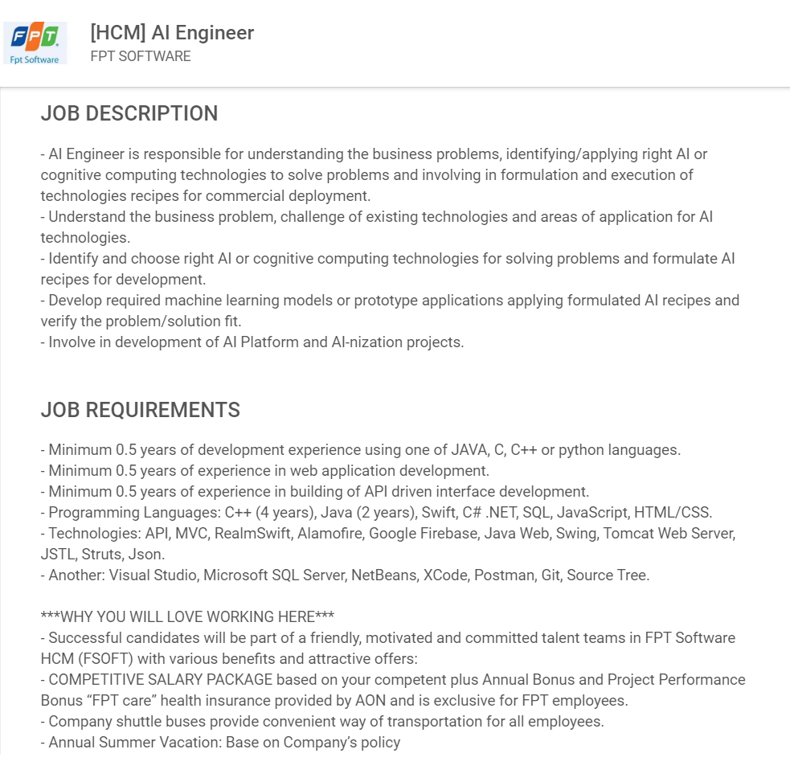

Ideal Job
As mentioned earlier, I want to be an AI/Deep learning engineer. TopDev, one of the leading IT recruitment platforms in Vietnam, anticipates that the year 2020 would see a deficiency of 100,000 IT jobs in the country, the majority of which are AI, machine learning, and deep learning jobs. This will give me the chance to work at Vietnam, specifically at FPT Software, to develop and apply the AI technology here, gaining more knowledge and experience regarding the occupation while still being able to make a lot of money.
Being an AI/Deep learning engineer for FPT Software, my work is to fully understand the company’s business model and decide where to apply AI/machine learning systems using my problem-solving skill acquired at university. I am to be in charge of the designing and operating parts of the systems. Particularly, these would be used in the customer service systems, image detection systems, virtual assistant systems, and many more, to make the services of the company and the job itself simpler and more efficient. This would fortify the three of the company’s currently existing main applications, which are Help Desk, Smart Robot, and Robotics Process Automation and introduce them on a broader scale.
Interesting as it may seem, the job as an AI/Deep learning engineer requires a lot of skills and qualification. A bachelor degree of IT is compulsory, going along with the coding skills in many different languages, such as JAVA, C, C++, Python, HTML/CSS, and so on. Secondly, I have to be able to use many technology platforms and cloud services, namely Realm Swift, Google Firebase, Git, Java Web, Microsoft SQL Service, and many more. Also, to be experienced in the field of AI, deep learning and machine learning would be crucial, as the name of the job implies, to have a suitable mindset.
I must admit that my decision to step forward to the IT field is a bit late, but it is better late than never. I can now code using basic C++ and a little bit of Python, as I am also taking classes of IT in general, computer systems and platform technologies, and programming. These three classes would help me to have a clear view on the subjects and give me the basic concepts about computer science, and after finishing the classes I will take all compulsory subjects and aim for a GPA above 3.5. On the other hand, I have many plans in mind to self-study some of the coding languages. First of all, I will study deeper into C++ as it is also a major AI programming language. Then down the road will be C#, Java, and many more. AI, deep learning and machine learning mindset needs to be built so I will find books and documentations to do a research about these topics. Apart from studying, I will join to create some projects and workshops to showcase as well as to stretch my knowledge and skills. Once I finish the Bachelor program of IT, I will apply for my ideal job as above, and if I could do my job well the company would present me with scholarship to study abroad for the Master degree of IT.My plan will definitely change through the learning process, but as long as I improve every day, everything will be on the right track.